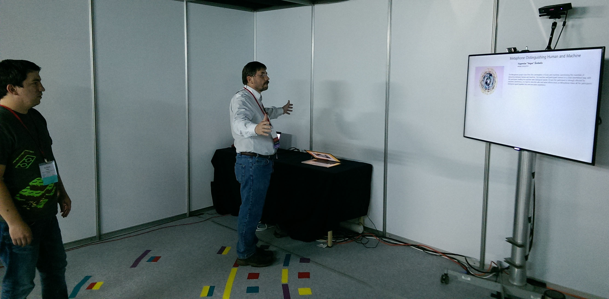

Art.CHI
The Interface Ecology Lab at Texas A&M University is exhibiting the Art.CHI 2015 gallery with innovative forms of curation in the ACM CHI 2015 Conference in Seoul, S. Korea. Art.CHI 2015 is an exhibition of leading interactive art. Our exhibit is based in a digital composition, which holistically connects and interprets the works that comprise the Art.CHI 2015 catalog. We are exhibiting this composition, titled Light Bounces: Space and Body, using two forms of our novel expressive web curation system, IdeaMâché: one in browsers on the web, and one, body-based, in ACM CHI 2015 Interactivity in Seoul.
In the web form of our exhibit, curated by Andrew Webb subsequent to the curation by the Art.CHI committee, clippings are spatially arranged in labeled conceptual clusters, such as light, body, and sonorous. Each clipping represents a work in the Art.CHI 2015 catalog. Webb has sketched amidst the clippings, interjecting his own visual and spatial concepts, such as the human body and free-form structure. A zoomable user interface provides an initial overview of the Light Bounces: Space and Body composition, while enabling the user to focus within the larger space of Webb's Art.CHI 2015 catalog curation.
We are presenting the body-based exhibition form, Embodied Iterative Curation, in ACM CHI Interactivity #i164, in Seoul. Here, participants take turns navigating the Light Bounces: Space and Body composition with a novel form of zoomable spatial interface through embodied movement and gestures. Movement and gesture are tracked with a Microsoft Kinect V2. This provides a model, which Body-based IdeaMâché uses to generate a personalized, iterative re-curation of the Art.CHI 2015 catalog. A unique QR code is assigned to the experience, which enables each participant to manipulate their personalized composition on individual web-browsers, initially on stations at the exhibit. The participant then takes this personalized curation home, through the cloud, as a rich souvenir, a record and reference point of their experience at the body-based exhibit of Art.CHI. Embodied Iterative Curation is the project of Interface Ecology Lab Ph.D. students Andrew Webb, William Hamilton, Nic Lupfer, and Rhema Linder, undergrad Cameron Hill, and Principal Investigator, Andruid Kerne, Ph.D.
publications
 Lupfer, N., Hamiliton, W. Webb, A., Linder, R., Edmonds, E., and Kerne, A.,
The Art.CHI Gallery: An Embodied Iterative Curation Experience,
Interactivity Exhibit,
Proc CHI 2015 EA.
http://dx.doi.org/10.1145/2702613.2725457
Lupfer, N., Hamiliton, W. Webb, A., Linder, R., Edmonds, E., and Kerne, A.,
The Art.CHI Gallery: An Embodied Iterative Curation Experience,
Interactivity Exhibit,
Proc CHI 2015 EA.
http://dx.doi.org/10.1145/2702613.2725457